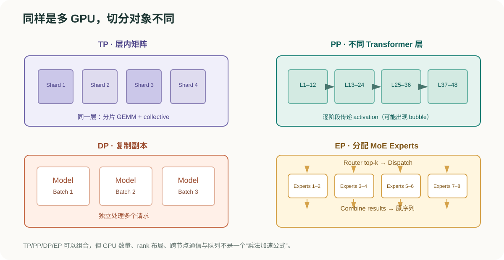

第 20 章 · 并行计算与高级推理
Pipeline、Data 与 Expert Parallelism：沿不同维度拆模型
比较 PP、DP、TP 与 EP 的切分维度、通信路径、MoE rank 布局与集群资源预算。
假如有八张 GPU，是把八张卡都给同一个模型，还是分成两个模型副本？答案取决于模型尺寸、请求量、互联、GPU 资源和是否属于 MoE。不同并行维度针对的问题不同。
学习目标
- 区分 TP、PP、DP 与 EP 的权重分布。
- 解释 PP bubble、DP rank 级并发与 MoE all-to-all。
- 识别 EP 与 DP 组合时 attention 和 expert 的差别。
- 为真实集群提出可压测的并行选型假设。

20.1 四种并行到底在切什么？
把整个推理服务看成三条坐标轴：同一个模型的层内矩阵（TP）、不同的层（PP）、独立请求批次（DP）。MoE 模型多出一条：专家权重和 token routing（EP）。它们可以组合，但不会“免费乘起来”。
| 维度 | 如何分配权重 | 主要通信 | 主要目标 |
|---|---|---|---|
| TP | 同一层矩阵按维度切分 | All-Reduce / Gather | 单副本容纳大矩阵、并行算子 |
| PP | 不同 GPU 放不同层 | 跨阶段激活转移 | 单副本跨节点容纳更多层 |
| DP | 复制模型副本（MoE 有特别逻辑） | 请求分发、部分 DP 协调 | 并行处理独立请求，提高总体吞吐 |
| EP | 不同 GPU 持有不同专家 | Token dispatch / combine，常含 All-to-All | 稀疏 MoE 专家权重分摊 |
20.2 Pipeline Parallelism：把层堆栈分成阶段
假设模型 48 层，PP=2 时 Stage 0 可以承载前 24 层，Stage 1 承载后 24 层。一个 token 的隐藏状态按阶段向前传递，而不是每个阶段各自预测出一个 token：
h₂₄ = f₁…₂₄(x)， y = f₂₅…₄₈(h₂₄)如果只有一个小 batch，某个阶段计算时，另一个阶段可能闲置，这就是 pipeline bubble。增大 microbatch 数可以提高占用率，但在线 decode 的短迭代、序列同步和工作负载不均衡会影响收益；不能直接用训练时的流水线效率公式作为推理保证。
跨节点 PP 的传输通常是阶段边界上的激活，不是每层 TP 都执行完整 All-Reduce，因此在模型超过单节点显存时，官方入门指引常建议让 TP 优先留在节点内、PP 用来跨节点。异构 GPU 或层大小不均时还要考虑非均匀分层。
20.3 Data Parallelism：多个请求批次独立推进
密集模型的 DP 通常在各 rank 上持有模型副本，不同 rank 可以服务不同请求批次。若一次请求已经由单副本运行，简单增加 DP 不会让这个请求的某一层自动并行。
GPU 总需求（简单场景）≈ DP × TP × PP这里乘积是规划初步资源数量的方便公式；实际多节点 worker、Ray、设备分组和 MoE EP 配置仍需核对。官方部署模式包括 internal、hybrid 和 external load balancing，不要假设 DP 总由单个 API Server 路由。
# 单机示例：4 个 DP ranks × 每 rank 2 张 TP GPU = 8 GPU
vllm serve <model-id-or-path> --data-parallel-size 4 --tensor-parallel-size 2重要细节：--max-num-seqs 是每个 DP rank 的请求并发上限，而 API Server 的 --max-num-queued-reqs / --max-num-queued-tokens 等 admission 限制可能按整个服务入口计算。不能把每 rank 256 直接解释成 API 入口能同时接受 4×256 个请求。
20.4 Expert Parallelism：MoE 不是普通密集网络
MoE 把 Feed-Forward 模块分成多个专家，router 对每个 token 选出部分专家执行。假设 8 个专家分布在 4 张 GPU 上，每卡两专家；不同 token 将被 dispatch 到不同设备，对应输出再 combine 回原序列位置。
yₜ = Σₑ gₜ,ₑ · Expertₑ(xₜ)， 仅对选中的 e 求和这不是“每个 token 跑过所有专家”。Top-k routing 的 k、expert load imbalance、通信 backend 和 token 数分布决定实际效率。EP 的 all-to-all 与 TP 的 all-reduce 不同：EP 先搬运 token 到专家，再搬回结果。
在当前官方 vLLM 文档中启用 --enable-expert-parallel 后，专家并行组大小按 EP_SIZE = TP_SIZE × DP_SIZE 自动计算。注意层类型不同：attention 可采用 DP × TP 的布局，而 experts 可以按 EP 分布；不能简单声称“整个 MoE 都 EP”。
# MoE 配置仅供拓扑概念参考；需核对模型和 EP backend
vllm serve <moe-model> --data-parallel-size 2 --tensor-parallel-size 2 --enable-expert-parallel20.5 选型规则与排障矩阵
- 模型放进单 GPU、只需增加独立请求吞吐：先考虑 DP 或多个独立 replica。
- 单 GPU 放不下、同节点有多 GPU：先评估 TP 与节点内互联。
- 单节点仍放不下：考虑 PP 跨节点与 TP 节点内组合，验证 pipeline bubble 和阶段负载。
- MoE 专家权重与 dispatch 成本显著：再评估 EP backend、专家负载和 all-to-all 带宽。
诊断时观察 GPU utilization、KV Cache、TTFT / ITL、NCCL collective 时间、跨阶段传输、DP ranks 的队列偏斜和 expert hot spots。增加并行度可能降低单 rank 显存，但也可能增加端到端同步成本。
生产边界：硬件拓扑、模型支持、量化 kernel、MoE backend 和版本是联合约束。上面的命令不是通用可运行配置；多节点还必须配置执行器、节点可达性、通信网络和访问控制。
本章自检
- 为什么 PP 按层切分与 DP 复制副本的通信模式不同？
- 为何 DP 会增加总吞吐，却不一定降低单请求的生成延迟？
- MoE 的 attention 与 experts 为什么可以使用不同并行维度？
- PP、TP、DP 大小如何对应物理 GPU 资源，哪些组合需要额外约束？
参考资料与源码入口
- Parallelism and Scaling：TP/PP 的配置和节点选择
- Data Parallel Deployment：DP 路由、MoE rank 同步及 admission 边界
- Expert Parallel Deployment：EP_SIZE、专家通信与 backend
- vLLM parallel config：并行参数、通信限制和运行时配置
审校基线：vLLM e72fc9ae50c221180c4b8f4a94c5009714a4b199（2026-11-22）。示例为教学示意；实际模型、GPU 拓扑和运行版本必须单独验证。